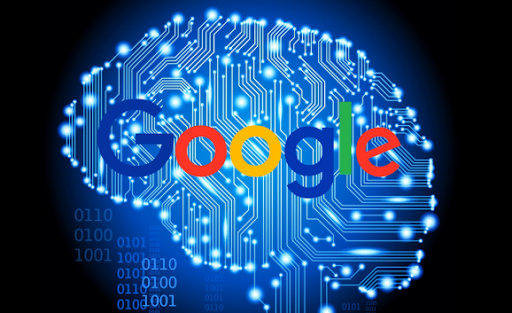

GoogleBrain
Google is at the forefront of innovation in Machine Intelligence, with active research exploring virtually all aspects of machine learning, including deep learning and more classical algorithms. Google brain was created in 2012. This was a deep neural network created by Jeff Dean of Google, which focused on pattern detection in images and videos. It was able to use Google’s resources, which made it incomparable to much smaller neural networks. It was later used to detect objects in YouTube videos.

AlexNet
Alexnet is a convolutional neural network (CNN) developed in 2012. AlexNet won the ImageNet competition by a large margin in 2012, which led to the use of GPUs in machine learning. They also created ReLU, which is an activation function that greatly improves efficiency of CNNs.